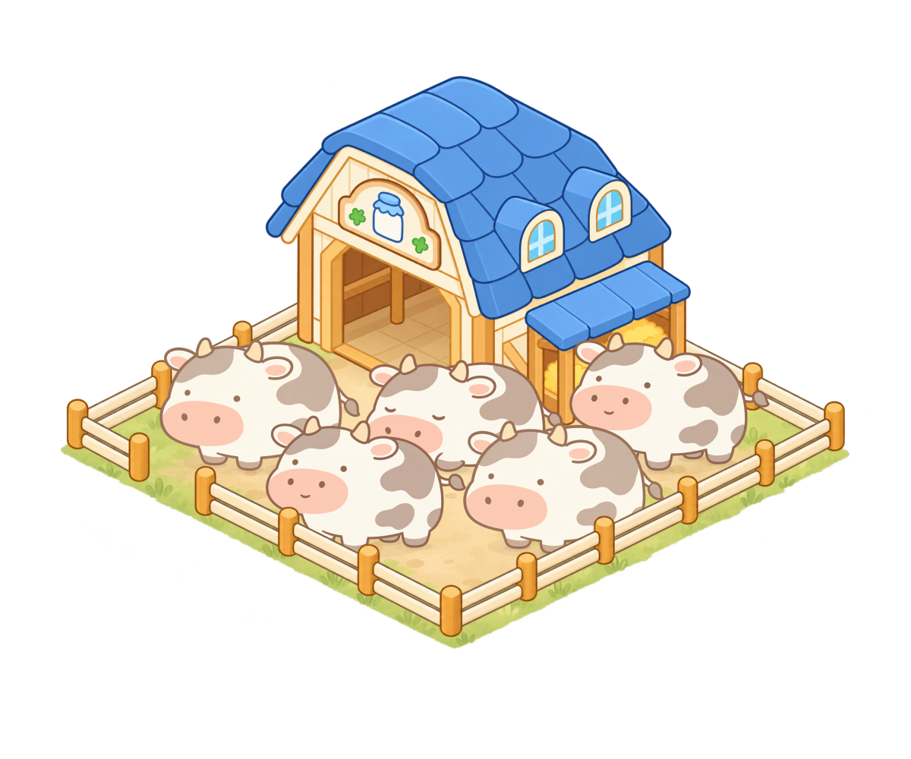
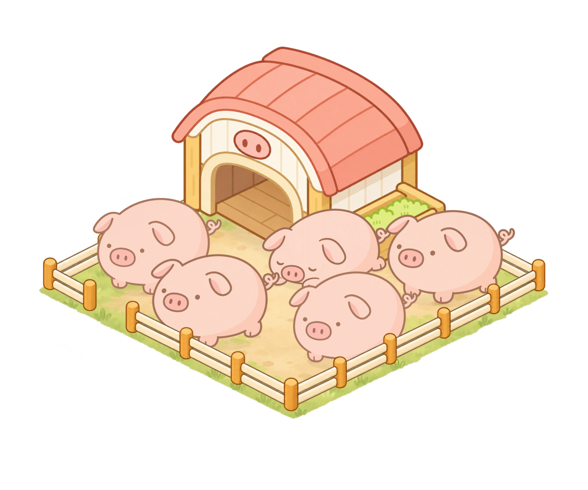
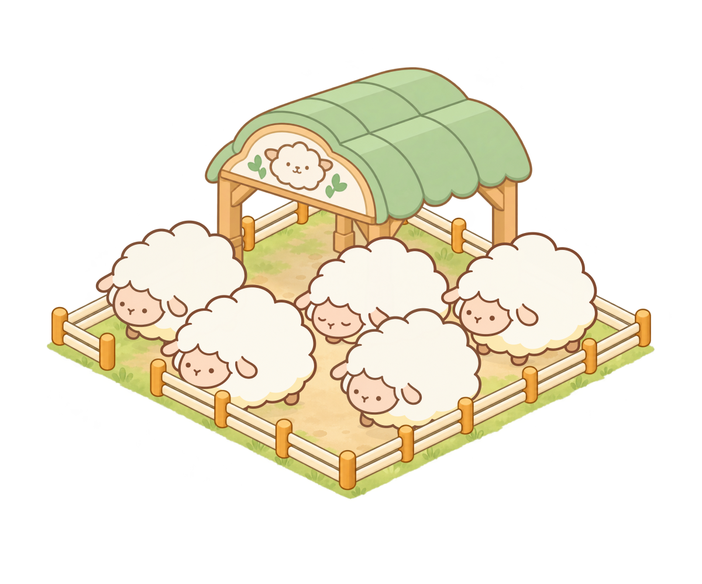
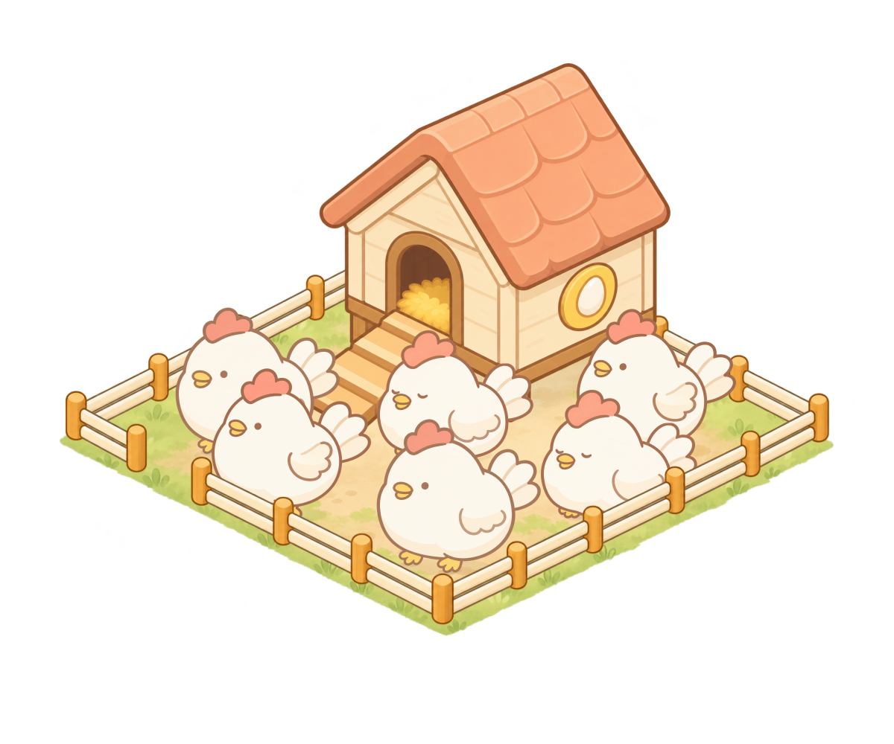

一圈围栏，一个完整的小院
五种设施已完成局部修正；统一院地，独立前后遮挡，保留原有动物三态。
牛棚 5 只 · 4×4

蓝屋顶与侧饲草位保留，去掉旧外栏及前半门。
猪圈 5 只 · 4×4

保留贴墙饲槽，去掉右后旧围栏，错位摆放避免遮脸。
绵羊棚 5 只 · 4×4

保留开放棚顶与承重柱，院地延伸到棚下。
羊羔棚 5 只 · 4×4

开放入口，去掉前挡栏、侧栏与外部杂物。
鸡舍 6 只 · 4×4

复用原鸡舍和坡道，核对坡道落点及 6 只鸡的组合。
- 15 个原动物状态复用
- 86 张透明分层 PNG
- 10 个可编辑 ORA 源文件
- 78 组状态与站位检查通过
游戏代码及原素材未修改。
点击任一设施检查空栏、图层及锚点。